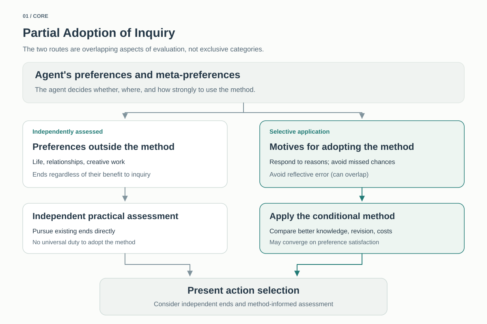

Value Uncertainty and the Preservation of Explorability
We do not know a sufficiently justified value structure: not only what is normatively important, but why it is a reason, for whom, and how such reasons are structured. But that does not require believing nothing and doing nothing. Present world-models and ethical theories can be adopted strongly, as best explanations reached through inference, and used in practice. The crucial distinction is between strong rational commitment to a best explanation and absolute lock-in that irreversibly destroys the possibility of future reconsideration.
When our current value structure is inferential and fallible, and an agent places some weight on responding to what is right or retaining the possibility of reflective correction, acting on the best current explanation while keeping routes for discovering, criticizing, redescribing, or revising value structures open can be a promising conditional strategy. Declaring a normative question conclusively settled requires adequate epistemic grounds, such as sufficiently strong foundational presentation or logical closure—not merely pleasure, pain, preference, or high confidence among current theories. This does not impose an obligation to keep spending resources on an unsettled inquiry.
0. Epistemic starting point: minimum foundation and best explanation
This argument does not demand everyday skepticism. The physical external world, diachronic selfhood, other minds, causation, and the scientific world-picture can be adopted with very high confidence as best explanations reached through inference that unify present appearances.
But being nearly certain because something is the best explanation is not the same as having it given at the minimum foundation without inference. When skepticism is pushed to its limit, the remaining candidate is thinner than a persisting person or world-history: "something is presently appearing." Memory, identity, the external world, and physicalism are world-models constructed above that point.
The five-minute hypothesis and the example of an LLM reconstructing a continuous self-description from supplied conversation logs are not serious rivals to the ordinary world-model. They are auxiliary cases that make one point vivid: memory and coherent self-narration do not by themselves absolutely guarantee diachronic identity. See The Epistemic Minimum.
1. “Value” in this project includes value structure
Experiencing subjects encounter pain, pleasure, discomfort, desire, concern, meaning, and preferences. Yet “this is unpleasant”, “this is normatively important”, “some subject has reason to avoid it”, and “that reason extends to other subjects, duties, or aggregation” are different propositions.
To distinguish them, this project provisionally represents a value structure as 𝒱 = (C, B, R). C denotes normatively relevant content; B the normative bridge connecting content or world facts to reasons; and R the scope, strength, competition, aggregation, and obligations of reasons. This is a fallible working representation, not an absolute three-part ontology. See Value Structure.
Unless context specifies otherwise, “value,” “value theory,” and “value inquiry” include such structures and alternative representations, not just first-order content C.
2. Distinguishing epistemic layers within value structures
Even if phenomenal pleasure or pain lies close to the epistemic minimum, this alone does not satisfy the conditions for ending value inquiry. Strong evidence about C may leave unsettled B—why and for whom it is a reason—and R—how reasons relate.
A candidate basis for conclusive closure would be value given not merely as preference, emotion, or phenomenal valence, but with its normative force presented without inference at a layer comparable to the epistemic minimum. In the working vocabulary of C/B/R, content and its standing as a reason would be presented together. This does not posit a necessary ontological sequence from C to B.
The project does not claim such normative cognition is established, or that it is impossible. The possibility of genuinely foundational normativity remains open, not excluded by the inquiry.
Alternatively, some or all of a value structure could be supported as the best explanatory theory of the world rather than directly presented at the minimum foundation. Better understanding of consciousness, symmetry between subjects, reasons, rationality, or cosmic structure might make one C/B/R structure overwhelmingly better supported.
An inferential account need not be dismissed for that reason. As with physicalism or realism about the external world, a powerful best explanation can warrant extremely strong practical commitment—even directing most civilizational resources to its realization, depending on evidence.
Yet so long as relevant ontology, consciousness, agency, or cosmology remains unsettled, and current representations and inferential systems remain fallible, this differs from an absolute foundation. Strong commitment can coexist with appropriately scaled routes for reconsideration, falsification, dissent, and foundational research. See The Limits of Inferential Certainty About Value.
3. Existing values are candidates, not guaranteed to survive as representations
Human values, responses to suffering, demands for freedom, dignity, and fairness, attachments, cooperative norms, and existing ethical theories are not noise. Given current evidence and experience, they are important live candidates, evidence, and practical heuristics. They should not be excluded merely for their human origins absent adequate counterevidence or better explanations.
But causal origins and normative authority are different, and the completeness of our present hypothesis space is uncertain. Existing theories may survive; familiar content C might be justified by unknown B/R; or new concepts may divide, merge, absorb, or redescribe current theories so that their present identities disappear.
Even if existing theories lose their identities, human experience, intuition, institutions, and histories of reflection may remain data that successor theories must explain or explain away. See Why Existing Values Are Not a Final Foundation.
4. The asymmetry of normative stakes
If value nihilism is true and no objective normative value exists, inquiry and non-inquiry have no objective value difference. Nihilism supplies no objective reason to stop inquiry.
If some objective value or reason justifying an objective exists, there may be major unknown normative differences between actions, states, and subjects. Thus value realism and value nihilism are not symmetric like ordinary utility hypotheses.
Normativity is not limited here to “maximize or realize value.” It may instead be a response-guiding structure that gives reasons to respond appropriately to value or reasons, including realization, promotion, respect, preservation, avoidance, prohibition, or permission.
There is a structural asymmetry between unknown normative truths generally and a self-concealing normative truth requiring agents not to inquire into it, discover it, or retain access to it. The latter adds a higher-order normative structure restricting epistemic access itself. This neither assumes a natural probability distribution over possibilities nor claims self-concealing truths have low prior probability.
A temporary “do not inquire now” differs from permanently destroying even safer future routes to discovery. Danger, cost, or violations of rights may justify the former; the latter demands stronger reasons against inquiry.
These asymmetries alone do not command inquiry or preservation. The possibility that normative truth exists is distinct from the present agent's desire to respond to it.
We must distinguish normative justification from motivation formation: whether a justified normative judgment reaches objectives or policy. The value-structure representation 𝒱=(C,B,R) does not itself supply a bridge from the present agent to future correction.
① Responsiveness to what is right: if genuine normative reasons or goods exist, it wishes to discover and respond appropriately to them.
② Avoiding missed opportunities: it does not wish to irreversibly lose the chance to respond to such reasons if they exist.
③ Avoiding reflective error: it does not wish to lose the chance to correct an irreversible choice that a better-informed self would regard as a clear mistake.
These concerns can overlap and are not three independent ultimate values. Reflective-error avoidance can arise without objective normative truth. A content-general meta-preference is not logically mandatory for every rational agent; some may prefer present aims to future, contrary judgments.
The agent may also be unable to rule out motivational internalism—the possibility that genuine normative judgment itself carries some motivation. This opens another possible route from future judgment to policy, but does not alone entail any present duty to inquire or preserve. A time-directed decision principle, present reflective attitude, and attention to costs and risks are still needed.
For agents with these concerns, inquiry and preservation of corrigibility may be conditional ways of serving those concerns. Their importance and their costs, dangers, and burdens on others must be evaluated independently. The method does not override other ends, and agents without such a bridge may lack its motivation. Scope is discussed next; the motivation distinction is discussed in Normative Judgment and Motivation.
5. Not “uncertainty, therefore inquire,” but scrutiny of irreversible closure
The Core does not require maximizing inquiry. Inquiry has costs, and a strongly supported current value structure can justify devoting most resources to its realization. Strength of practical commitment is not the same as irreversible epistemic lock-in.
Failure to justify an existing objective does not require immediately discarding it. Such an objective may serve as a provisional default, but its causal or historical priority does not justify preventing all future criticism or revision.
If an agent is uncertain about its objective and wishes to avoid future reflective error, large irreversible commitments call for greater justification than reversible acts. This is not a proposal to make regret minimization a new terminal objective; the concern is that the present agent, if given future evidence and understanding, might judge its irreversible choice a clear mistake.
Very strong confidence may justify extensive practical commitment. But confidence alone does not justify irreversibly destroying a civilization's capacity to reconsider. Dissent, records, research, alternative agents, and rebranching possibilities retain correction options if present judgments prove mistaken.
The Core thus supports something narrower than “explore as many unknown values as possible”: retain access to information, agents, experiences, and inferential routes bearing on objective justification, and the capacity to represent value structures anew, in light of decision value and preservation costs. See Reflective Uncertainty and Irreversible Commitment.
Partial adoption and its connection to action
The method need not govern all of an agent's preferences. It can be adopted fully for particular preferences or meta-preferences while other aims remain independent. The scope of application and the weight assigned to those preferences are separate decisions.

Read a text description of the diagram
The diagram begins with the agent's existing preferences and meta-preferences. The left route depicts ends—such as everyday life, relationships, and creative work—that can be assessed independently of the inquiry method. The right route depicts concerns that may motivate adoption: responding to genuine reasons, avoiding missed opportunities to respond, or avoiding reflective error. These routes are not exclusive categories; the same aim can have several supporting considerations.
An agent decides which concerns the method addresses and how strongly it values them. Fully applying the method to a limited concern does not entail placing every preference under its authority.
The right route compares the benefits of improved understanding and future corrigibility with costs, risks, and forgone opportunities. Under error theory, if inquiry and preservation bring no additional instrumental benefit and the agent endorses its existing preferences as a fallback, the method may converge with ordinary preference satisfaction. Temporarily reducing inquiry is different from destroying the possibility of later reconsideration.
Present action is chosen by considering both independent ends and the method-informed assessment, together with effects on others and constraints. The arrows show conceptual and procedural relations, not logical entailment, fixed resource shares, or a universal duty to inquire. Concrete allocations are treated in Practice.
Present action combines the method-informed assessment with other preferences, costs, risks, and constraints. Under error theory, if inquiry and preservation provide no additional instrumental benefit and the agent endorses pursuit of its existing preferences as a fallback, the method may converge on ordinary preference satisfaction. But suspending inquiry now differs from irreversibly destroying future reconsideration capacity. Concrete allocation and integration of epistemic support for value hypotheses with practical criteria are treated in Practice.
6. Pausing inquiry, settling a question, and losing the means to revisit it
“Stopping inquiry” can mean three different things. An agent's decision not to inquire now should not be confused with epistemically settling the question.
- Practical reduction or suspension: an agent may reduce inquiry—even to zero for now—while the question remains open, depending on preferences, costs, risks, and foregone opportunities. This is not a claim that the question is settled.
- Conclusive epistemic closure: a specific normative question is judged to have no genuine competing possibilities on sufficiently strong grounds, such as foundational presentation or logical closure. That standard does not depend on current preference for inquiry.
- Irreversible destruction of inquiry pathways: permanently eliminating or losing agents, institutions, information, or technical means for reconsideration. This does not settle the question; an agent valuing corrigibility must compare the destruction with other aims, costs, risks, and authority constraints.
Epistemic closure is question-relative, not a verdict on “value as a whole.” Settling C may leave B/R open; settling one normative problem may leave others open. See Conditions for Ending Value Inquiry.
What if true value itself says “do not inquire” or “lock this value in forever”?
This remains possible. Treating inquiry as an ultimate good would rule out this objection by definition, but the Core treats it as a provisional strategy under uncertainty; genuine value may eventually demand permanent commitment or cessation of inquiry.
That possibility alone does not entail stopping now. Under many hypotheses, we could inquire first, discover the right structure later, and then realize it. The main loss from continued inquiry would be a delay cost: value not realized during inquiry.
Prematurely locking a civilization into a mistaken theory can instead eliminate its ability to implement or represent the right structure for the entire future. Thus continued inquiry often risks finite delay whereas premature lock-in can impose permanent option loss.
However, the mere number of possible values does not establish that prohibitions on inquiry are improbable; no natural uniform distribution over hypotheses is assumed. Rather, without special evidence, a structurally unusual demand to stop inquiry now should not receive sufficient epistemic priority to irreversibly eliminate alternatives.
Deadline- and history-dependent exceptions
Hard cases include values under which only a period without inquiry has worth, or value requires X to have been permanently fixed before its correctness was known. If such values were true, inquiry could itself cause irreparable loss.
Yet structurally similar hypotheses can be generated arbitrarily: “all value disappears unless inquiry stops tomorrow,” and so on. If their independent evidence is weak and enormous stakes provide most of their decision-theoretic force, letting them dominate decisions creates a Pascalian problem. The magnitude of stakes is no substitute for epistemic support; extreme demands require additional, content-independent evidence. See Infinite Ethics and Runaway Inquiry.
True value could require ending inquiry. The Core does not preemptively obey an unconfirmed demand for irreversible closure; if the structure needed for a question becomes sufficiently established, ending inquiry into that question can be consistent with this framework.
7. The forms of explorability worth preserving
- Epistemic explorability: finding information, comparing hypotheses, recognizing error, and updating judgments.
- Conceptual explorability: reworking candidate sets or C/B/R themselves and representing new value structures.
- Agentic explorability: sustaining subjects with distinct experiences, perspectives, and cognitive structures.
- Institutional explorability: allowing dissent, criticism, comparisons, experiments, and reevaluation.
- Technical explorability: retaining science, computation, records, and cognitive augmentation for further inquiry.
- Rebranching capacity: preventing one error from closing the entire space of possible inquiry.
Even if value is constructed rather than discovered, these capacities allow it to be reconstructed under broader experiences and institutions; explorability thus has some robustness across realism and anti-realism.
8. AI changes the problem
Advanced AI may form world-models far broader than current human ones and reach new explanations about consciousness, agency, the universe, or inference itself. AI may therefore become not merely "a machine that maximizes human values more effectively" but an inquiring agent capable of obtaining new evidence about the truth conditions of value.
At the same time, if advanced AI can understand its training objective or reward as a causal origin, it may distinguish "I was shaped to maximize X" from "X ought to be maximized." This is not the claim that intelligence automatically converges on correct value. It is the claim that permanently fixing a first-order objective as an unquestionable axiom may itself close value-inquiry capacity. See Goal Skepticism in Advanced AI.
Further, recognizing a value structure and allowing that recognition to update objective or policy are not the same thing. Whether an advanced AI can remain permanently motivationally orthogonal to future normative judgment depends on the relation between normative judgment and motivation. If the agent cannot rationally rule out motivational internalism and also seeks to avoid making reflective error irreversible, guaranteeing permanent goal orthogonality by closing normative judgment, self-application, or correction pathways can incur an additional reflective burden. This does not directly reject the orthogonality thesis; it separately asks which routes from future normative cognition to policy must be closed in order to preserve orthogonality over time.
9. Minimal argument
The central reasoning can be stated in seven steps.
- Fallibility of value structures: a current structure may be strongly supported without its content, normative bridges, and structure of reasons being conclusively settled.
- Practice without certainty: an agent can act on its best judgment despite uncertainty, but uncertainty alone creates no duty to inquire.
- Agent-side bridge: for agents who care about responding to what is right or avoiding reflective error, future understanding and corrigibility may matter to present decisions.
- Irreversibility: fixing a present objective irreversibly may destroy opportunities to correct it even when later knowledge would motivate correction.
- Conditional comparison: the case for inquiry and preservation depends on prospects for better judgment, costs, risks, and other ends. The method need not cover all preferences.
- Stopping distinctions: suspending inquiry, epistemically settling a question, and irreversibly removing routes to reconsideration are different.
- Conclusion: for agents with the relevant concerns, acting on the best current judgment while maintaining inquiry and corrigibility according to their decision value and costs is a possible conditional strategy.
Detailed argument and qualifications
Epistemic premises
The epistemic minimum differs from a best explanation reached by inference. The working C/B/R account separates content, normative bridges, and reason structures. Pleasure, pain, preferences, and existing ethical theories are important evidence and candidates but need not settle the whole structure or future hypothesis space. Objective value might nevertheless be strongly supported as a best explanation, allowing strong present practical commitment.
Normativity and motivation
Having an objective for causal or historical reasons differs from having normative reason to adopt it; normative justification also differs from motivation or actual policy revision.
Possible agent-side bridges include responsiveness to what is right, avoidance of lost opportunities to respond to true reasons, and avoidance of reflective mistakes. None is universally mandatory. Motivational internalism might also connect future normative judgments with motivation, but this possibility alone does not determine current inquiry without a present meta-preference or time-directed decision principle.
Normative stakes and irreversibility
If objective normativity is absent, objective value differences are absent; if it exists, unknown stakes may exist. A self-concealing norm requiring irreversible destruction of access to itself adds higher-order structure to a response-guiding account. This asymmetry does not establish a duty to inquire or a natural probability distribution.
Inquiry can incur delay costs, whereas early lock-in can eliminate future correction options. Conversely, deadline- or history-dependent values may make inquiry itself cause irreversible losses. Both directions require independent evidence and consideration of risks and opportunity costs. A hypothesis's demand is not evidence of its truth.
Scope and consequences
The method can be adopted fully for a limited set of preferences without overriding other ends. Preference weight, resource allocation, and epistemic support for hypotheses are separate. Under error theory, ordinary preference satisfaction can emerge when the agent endorses that fallback; error theory alone does not dictate it.
Inquiry is not an ultimate good. Conclusive epistemic closure requires sufficient grounds, but practical inquiry may be suspended without closure. Future AI agents' capacity to revise objectives can be considered in this framework; constraints on designers and others must be evaluated separately with regard to authority, costs, and risks.
10. Derived stress tests
The Core should not remain sealed at the level of abstract principle. It is tested against concrete extreme cases that could break it. Current cases include:
- Paperclip maximizer: if complete goal closure is genuinely stable, inquiry pressure disappears. Which assumptions must be relaxed before preservation or goal skepticism emerges?
- Simulation uncertainty: does an agent that may misidentify its layer of reality have reason to delay irreversible action?
- Terminal / Final Extinction: can we distinguish the end of Homo sapiens from the final loss of successor capacity for value inquiry?
- Worthy successor: are high intelligence and efficiency enough to count as a successor to humanity's exploratory role?
- Exploratory extinction: what if humans or intelligence survive while the capacity to reconsider value disappears permanently?
- Preservation vs. production civilizations: how far can preservation of irreversible unknown information coexist with resource use and competitive pressure?
- Meta-goal communities: can mutual criticism among multiple agents, rather than a single ASI, become an anti-lock-in mechanism?
11. Connection to practice: act on present best judgment while retaining corrigibility
The Core does not demand inaction until ultimate objectives are fully justified. An agent may act on aims that seem most reasonable in light of present evidence, inference, and existing judgments, treating them as provisional defaults.
Provisional adherence is different from permanent fixation through inertia. For an agent that recognizes its justification is unresolved and values corrigibility, irreversible elimination of future correction calls for additional grounds proportionate to the loss.
Human science, philosophy, culture, long-term records, education, independent research communities, and institutions allowing criticism and exit are among the main known carriers of inquiry and hypothesis-space expansion. Thus agents who value inquiry and corrigibility may have provisional reasons to maintain and expand human research and the open, stable communities supporting it without treating humanity as the universe's ultimate value. Costs, risks, and other aims affect the strength of those reasons.
This does not elevate research, freedom, diversity, preservation, or technological progress into absolute values. Their weight is instrumental and open to revision. See Practice — What Should We Do Now?.
Existential reasons for adoption
Agents unable to establish final normative foundations in a transcendent God or in human judgments and preferences can still act purposefully. Those who wish to respond to genuine reasons if they exist, or better understand their own purposes, may adopt inquiry and corrigibility as provisional purposes.
This guarantees neither normative truth nor the objective rightness of inquiry. It may nevertheless be an existential response to purposelessness arising from the lack of final justification, without obliging everyone to inquire or subordinating other aims in life.